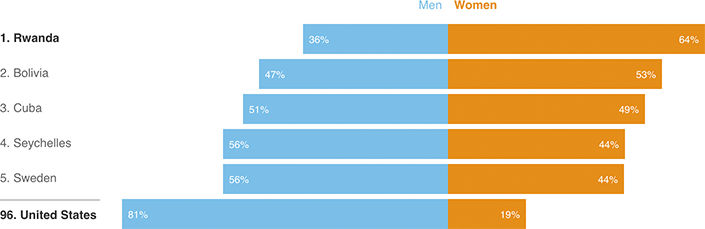

Rwanda Leads World With Share Of Women In National Legislature
Women hold 64 percent of seats in the lower house of Rwanda’s national legislature, the largest share of any country. For comparison, only 19 percent of seats in the U.S. House are held by women.

Notes
— Figures shown are based on the number of occupied seats in a country’s national legislature. If the legislature has multiple houses, the “lower” house is used.
— U.S. totals exclude two vacant seats in the House of Representatives.